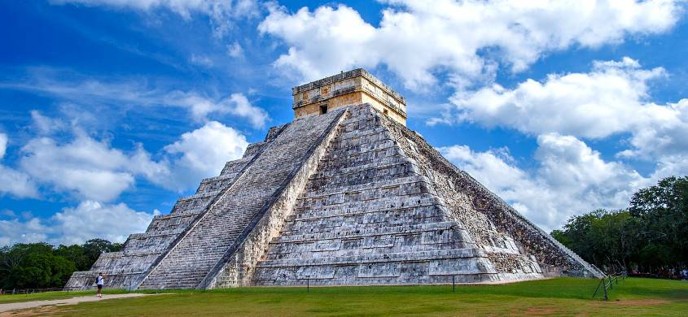

Antonio Montini
CHICHEN ITZA

| Informazioni | |
|---|---|
| Civiltà | Maya-Tolteca |
| Epoca | 500 a.C.-1500 d.C. |
| Ubicazione | Yucatán (Messico) |
Chichén Itzá è un importante complesso archeologico maya situato nel Messico, nel nord della penisola dello Yucatan. Le rovine, che si estendono su un'area di 3 km², appartenevano a una grande città che fu uno dei più importanti centri della regione intorno al periodo epiclassico della civiltà maya, fra il VI e l'XI secolo. Il sito comprende numerosi edifici, rappresentativi di diversi stili architettonici; fra i più celebri si possono indicare la piramide di Kukulkan (nota come El Castillo), l'osservatorio astronomico (il Caracol) e il Tempio dei guerrieri.
Il sito di Chichén Itzá è stato dichiarato patrimonio dell'umanità UNESCO nel 1988. Costituisce una proprietà federale dello stato del Messico, ed è amministrato dall'Instituto Nacional de Antropologia e Historia (INAH). È stato inserito nel 2007 fra le sette meraviglie del mondo moderno.
Per sapere di più cliccare il bottone seguente.
Il sito di Chichén Itzá è stato dichiarato patrimonio dell'umanità UNESCO nel 1988. Costituisce una proprietà federale dello stato del Messico, ed è amministrato dall'Instituto Nacional de Antropologia e Historia (INAH). È stato inserito nel 2007 fra le sette meraviglie del mondo moderno.
Per sapere di più cliccare il bottone seguente.